knitr::opts_chunk$set(fig.width=8, fig.height=4)This is a catalogue of all data sets included in the package. You will find below plots of the emission spectra of different lamps. All spectra are normalized to an area of one at the peak of the curve.
The spectral data have been acquired with different instruments. These spectrometers differ in their wavelength resolution giving for the same lamps measured peaks of different width when peaks are narrow. This is an inevitable artefact of spectral measurements.
library(photobiology)## For news about 'photobiology', please, see http://www.r4photobiology.info/## For on-line documentation see http://docs.r4photobiology.info/photobiology/library(photobiologyWavebands)## For news about 'photobiologyWavebands', please, see http://www.r4photobiology.info/## For on-line documentation see http://docs.r4photobiology.info/photobiologyWavebands/library(photobiologyLamps)## For news about 'photobiologyLamps', please, see http://www.r4photobiology.info/## For on-line documentation see http://docs.r4photobiology.info/photobiologyLamps/library(ggplot2)
library(ggspectra)## For news about 'ggspectra', please, see http://www.r4photobiology.info/## For on-line documentation see http://docs.r4photobiology.info/ggspectra/options(photobiology.plot.annotations =
c("boxes", "labels", "colour.guide", "peaks", "title"))cat(comment(lamps.mspct$germicidal))## Spectrometer: MayaPro2000 s/n MAYP11278
## Bench with grating HC1, filter 000 and slit 010s
## Measured on 2015-06-02 10:42:35
## processed on 2015-06-02 with MayaCalc ver 3.2.3
## using HDR: TRUE, using NR: TRUE, method: original
## calibration dated (automatic): 2014-10-15
## number of scans : 6, 1
## integration times (ms) : 943.1, 9430.6
## total times (s) : 5.6584, 9.4306
## max counts : 51087 out of 64000 (80%)
## signal O.K.plot(lamps.mspct$germicidal)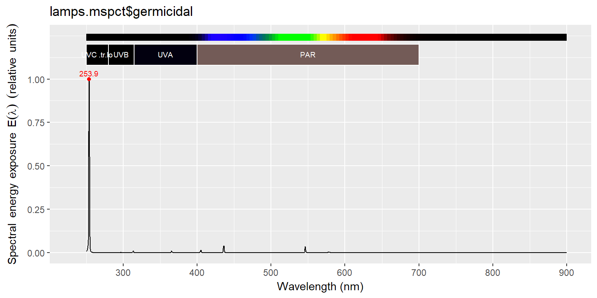
plot(lamps.mspct$philips.tl01)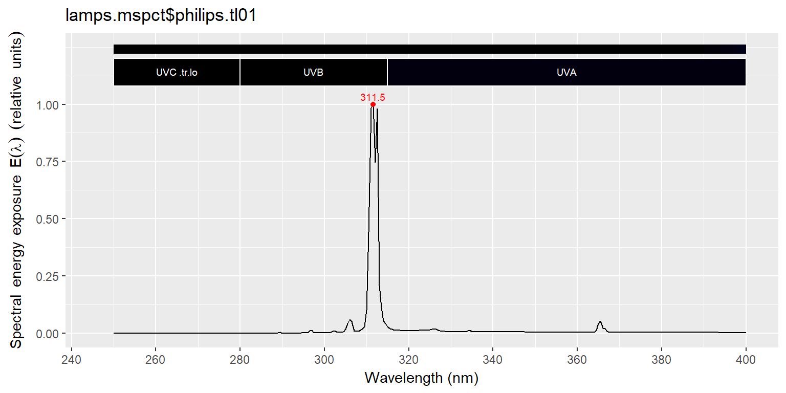
plot(lamps.mspct$philips.tl12)plot(lamps.mspct$philips.tl12)plot(lamps.mspct$qpanel.uvb313)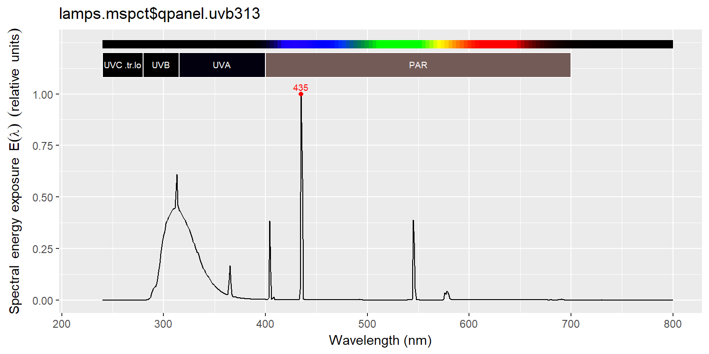
fig_temp <- ggplot(data=qp_uvb313_temp.spct,
aes(x=w.length, y=s.e.irrad, colour=factor(temperature))) +
scale_colour_brewer(type="seq", palette="YlOrRd")
fig_temp <- fig_temp + geom_line() +
labs(x="Wavelength (nm)", y="Spectral energy irradiance (W m-2 nm-1)",
colour="Temperature (C)")
print(fig_temp)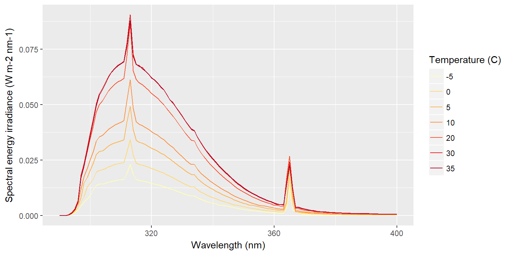
qp_uvb313_temp.spct$t_factor <- factor(qp_uvb313_temp.spct$temperature)
plot(qp_uvb313_temp.spct, annotations = c("boxes", "labels", "title")) +
facet_wrap(~t_factor, ncol = 2)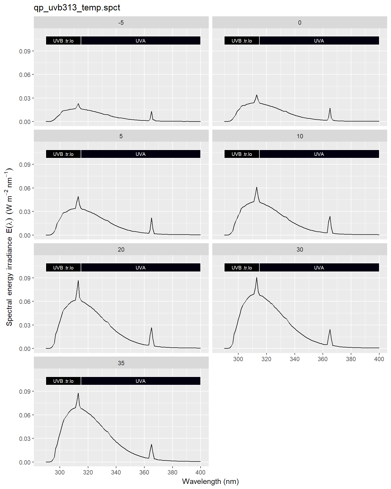
attach(lamps.mspct)
plot(incandescent.60w)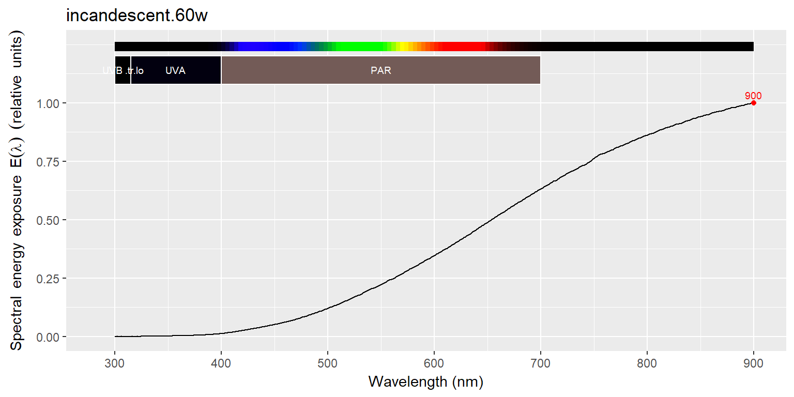
plot(osram.36w.25)plot(philips.tld36w.83)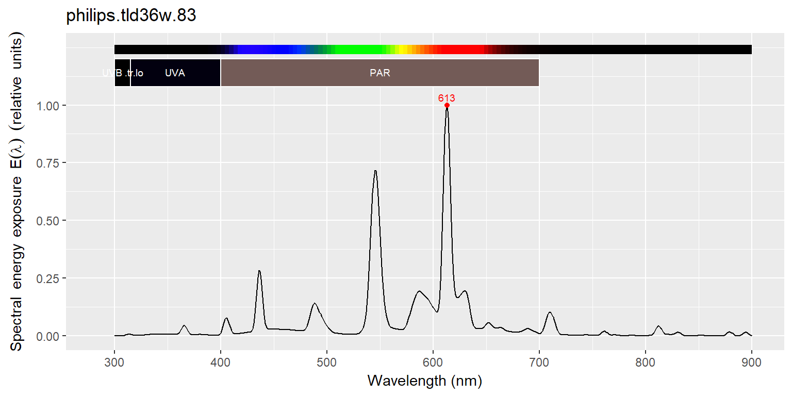
plot(philips.tld36w.89)plot(philips.tld36w.92)plot(philips.tld36w.865)plot(philips.tll36w.950)plot(philips.pls11w.827)plot(sylvania.215w.vho)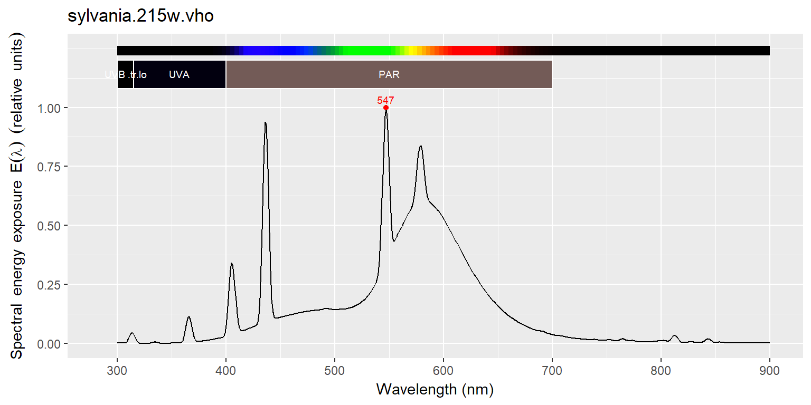
plot(osram.hqit.400w)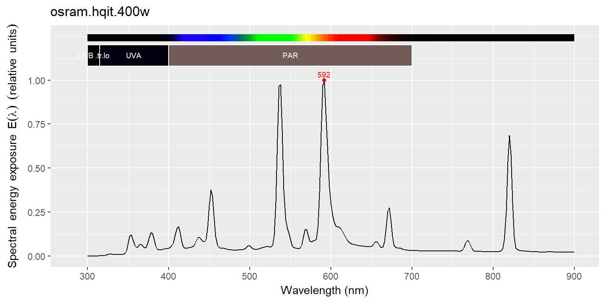
plot(osram.super.vialox)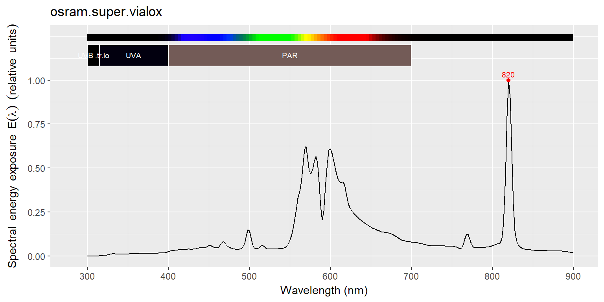
detach(lamps.mspct)FEL.spct <- FEL_spectrum(300:900)
D2.spct <- D2_spectrum(200:400)
plot(FEL.spct)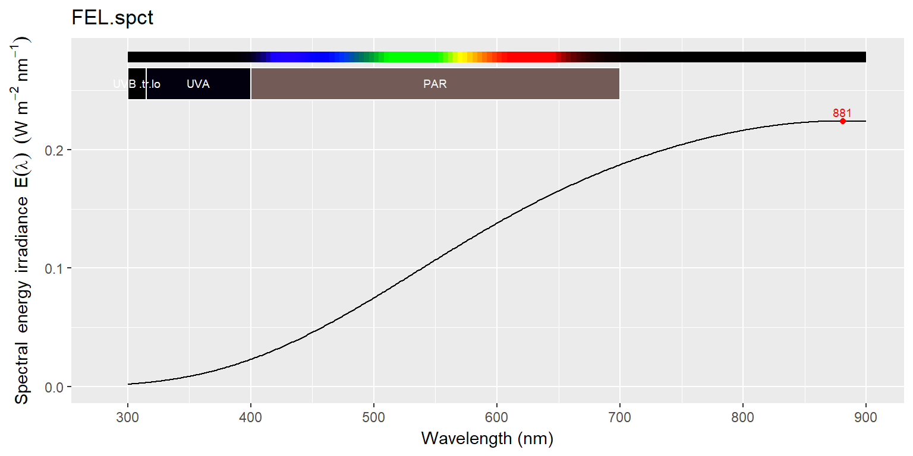
plot(D2.spct)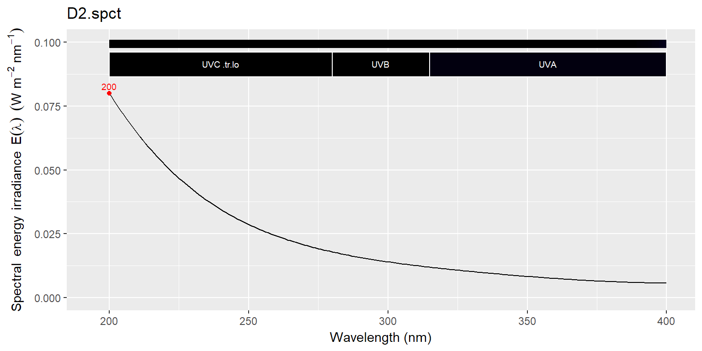